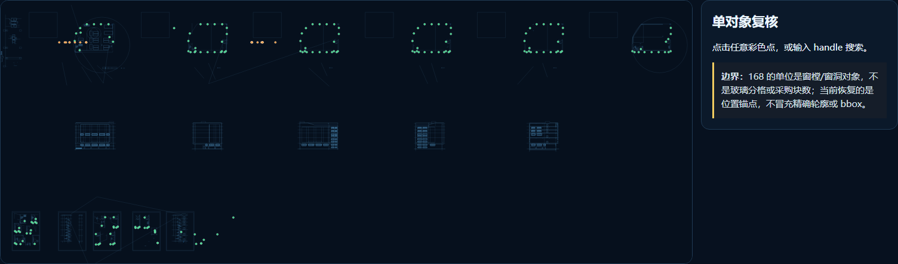
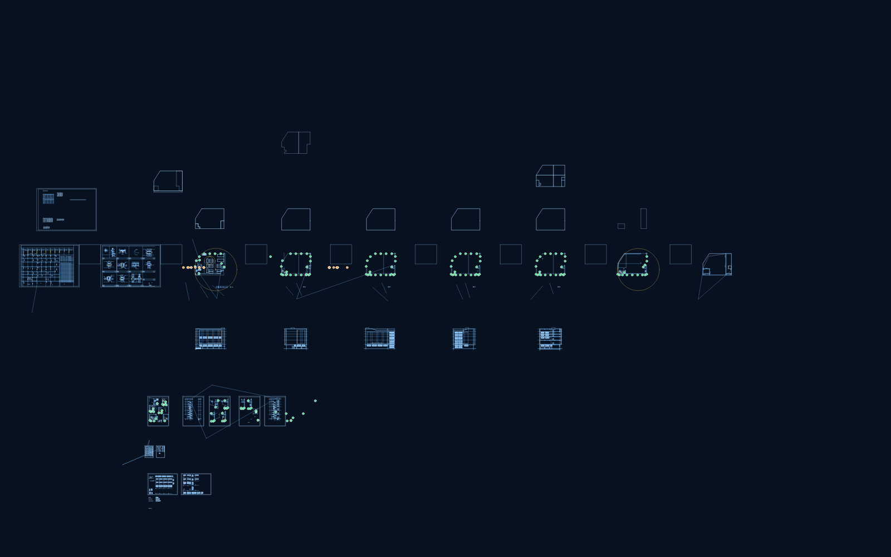
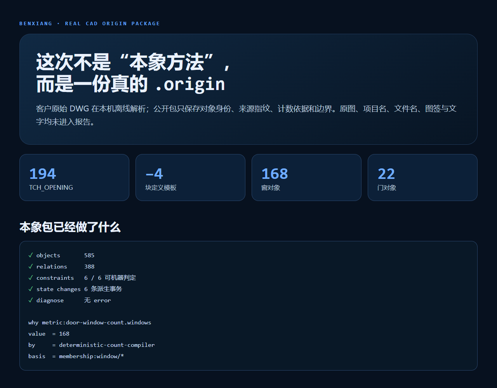

一张 6.58 MB 的复杂 CAD，机器报出“168 个窗”并不难。难的是：168 个对象能不能逐个点回原图，能不能解释为什么算它，能不能在换模型之后仍然复核。
日志里有一行很短：
windows=168, doors=22, unknown=0
如果这是普通 AI 演示，差不多可以收工了。数字够醒目，截图也能做。
但我盯着它看了一会儿，觉得不对。第 97 个窗在哪里？它为什么算窗，不算门？如果客户说“你多算了一个”，我们拿什么回去对？
这三个问题，把一个计数小活变成了本象协议的实战测试。

190 个实际放置对象在脱敏基础几何上的总览
/ / /
这份图里，离线解析拿到了 194 个 TCH_OPENING。其中 4 个只存在于块定义，像模板，不是现场实际放置的门窗；剩下 190 个对象里，168 个被分类为窗，22 个为门，未知项是 0。
数字关系很干净：
194 = 4 + 190 190 = 168 + 22 + 0
我第一次跑到这里，其实挺满意。过了几分钟又把这个结论降级了：计数正确，不等于结果可审计。
传统脚本会把 168 写进报表。大模型会把 168 组织成一句更像人的话。两者都可能没保留“这 168 个到底是谁”。一旦中间对象丢了，后续就只能重跑，或者相信那行日志。
本象这次保存的不是一行数字，而是一组对象：
opening:38A opening:38B opening:38E ...
每个对象保留稳定 handle、所属图层、owner、分类、载荷 SHA-256，以及它参与哪些统计集合。168 只是 membership:window/* 的一个确定性投影。
这差别看起来像工程洁癖。真遇到争议时，它就是能不能把账对回去的差别。
/ / /
我原先以为位置回落会很省事。ezdxf 能读取 ACAD_PROXY_ENTITY 的 proxy graphic，理论上直接取 virtual entities，再算 bbox 就行。
结果 194 个对象都有 proxy graphic，长度却清一色只有 8 字节。空的。
这破玩意很诚实：图里保留了天正对象的数据，但没有留下可直接展开的代理图形缓存。没有匹配的天正解释器，就不能假装已经拿到精确轮廓。
所以我们换了一个更保守的目标——先恢复对象的位置锚点，不冒充 bbox。
载荷里存在重复、稳定的 double 字段。窗对象的一个坐标只落在绝对偏移 41、43、47 三个版本位；另一坐标位于载荷后段。三组覆盖数是 11 + 135 + 22 = 168。门对象对应两组版本位，覆盖 3 + 19 = 22。
我不愿意只凭“数字正好对上”就发证。于是又做了两层闸门：每个对象必须只有一个无歧义坐标解；整批结果必须叠回脱敏基础几何，由图形分布做人工复核。只要出现一个歧义，导入器就拒绝生成可复核版 .origin。
最终结果是：190/190 个实际放置对象都有位置锚点。
按 handle 选中 opening:38A 后，可见坐标、解码证据与独立查询命令
上图里的 opening:38A 不是演示时临时编的编号。它能单独查询：
origin why cases/cad-window-audit.origin opening:38A.position_anchor
返回的不只有坐标，还能看到哪次事务写入、谁写的、依据哪些字段。这里写入者是 tch-opening-anchor-decoder，basis 指向该对象的载荷指纹、字段偏移证据和解码器观察。
这才算“落回去”。
/ / /
这个问题我觉得必须说清楚，不然宣传很容易写飘。
ODA File Converter 27.1 负责把 DWG 转成可继续处理的 DXF；ezdxf 抽取代理对象；GNU LibreDWG 0.14 从另一条链确认 class 528 总数确实是 194。它只独立确认总数，没有独立确认 168/22 分类——这条边界已经写进包里。
大模型干的活也不少：它分析二进制重复模式、写解码器、生成测试、检查叠加效果。我把它看成一个速度很快、但必须被约束的工程协作者。
那本象干什么？
本象不抢解析器和模型的功劳。它负责让这些功劳留下可复核的形状。
具体说，是四件事：
why 能回答这个值从哪来，history 能回答哪次事务改了它。
脱敏 CAD 基础几何与 190 个门窗位置锚点总览
讲真，这个分工比“我们用 AI 读懂了 CAD”更靠谱。后一句适合做海报，前一句才适合交付。
/ / /
客户最初问的是窗户有多少个。工程上这句话并不精确：是窗樘、窗洞、玻璃分格、玻璃片，还是采购清单里的构件？
当前 168 的单位是 opening-object，也就是天正建模里的窗樘/窗洞对象。它可能包含被建模成窗的百叶。没有门窗材料表，就不能继续声称“纯玻璃窗 168 个”，更不能拿它直接下采购单。
我宁愿这句话影响传播效果，也不愿它消失。因为一个系统有没有能力说“我不知道”，往往比它能说多少更重要。

案例证据报告：解析器、计数、约束、边界分别列示
/ / /
它没有证明本象比 ODA 更会读 DWG，也没有证明本象比天正更懂天正对象。那样写属于抢活。
它证明的是另一件事：当模型和工具完成一次复杂工作后，结果可以从一句话升级为一套可持续复核的对象状态。
今天问“有多少窗”，投影得到 168。
明天问“防火层上的门有哪些”，可以从同一对象集查。后天拿到材料表，再把材质关系接上，不必推翻今天的身份和证据。换一个大模型，也不必从聊天记录里猜上次做到了哪一步。
这就是我目前对本象协议最直观的理解：它不是替大模型思考，而是让大模型做过的事有对象、有账、有边界，还能继续长。
当然，精确轮廓和 bbox 还没恢复；那一步需要匹配的天正解释器，或者更完整的实体导出。我们没有把“位置锚点”写成“精确几何”。
这点不够炫。
但很本象。
本案例代码与脱敏证据包计划发布到 GitHub；交互对象地图可本地直接打开。项目入口：u-king.org。